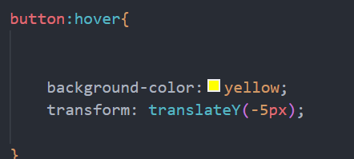

To change the font, use font-family: "Calibri";
For changing the font size with font-size: 2em;,
You can making the text italic with font-style: italic;, and make it bold with
font-weight: bold;.
Classes and ID as selectors
We use IDs to style one specific element and classes to style multiple elements. IDs are unique, so they apply styles to a single element, while classes can be used on many elements to apply the same style.
-
IDs are unique and should start with a letter, like
#id64. Style it in CSS with #id64 { }.
CSS Specificity Rules

Inline Styles: Styles applied directly to HTML elements using the style attribute have the highest specificity in CSS.
ID Selectors: Selectors targeting elements by their unique id attribute (#) have higher specificity than classes and element selectors.
Class Selectors, Attribute Selectors, and Pseudo-Classes: Selectors using ., [attribute], or pseudo-classes have medium specificity, falling between IDs and element selectors.
Element Selectors: Selectors targeting HTML elements directly (like h1, div, etc.) have the lowest specificity among CSS selectors.
Borders and CSS Box model
The CSS box model is a layout model that defines the space an element occupies, including:
- Content: The actual content of the element.
- Padding: The space between the content and the border.
- Border: The line surrounding the padding (and content).
- Margin: The space outside the border, separating the element from others.

So, the CSS syntax for the box model roughly looks like this

Padding, Margin can be adjusted from different direction in an easier way.
For example: padding:16px 16px 100px 16px;
margin-left: 24px;
padding-right: 24px;
The order: TOP,RIGHT,BOTTOM & LEFT.
-
There is a shorter way to write Border properties.
For example: border: 24px solid black;
The order: SIZE, TYPE & COLOR
CSS positioning (More to Come)
Here's how we position elements in CSS. The image below illustrates the concept:

CSS units
CSS units are crucial for defining the size and spacing of elements on a webpage.
Common units include pixels (px), which are fixed-size units; ems (em), relative to the font-size of the element's parent; and root ems (rem), relative to the font-size of the root element (typically the HTML element).
Using relative units like ems and rems enables more flexible and responsive design.
Browser Developer Tools: Analyzing and Modifying Web Pages
Browser developer tools allow you to inspect and modify web pages, helping you understand site structures, debug issues, and experiment with design changes locally. These changes are temporary and do not affect the live site, making it a valuable tool for testing and learning.

Image of a Cat
Understanding the CSS box model further (Putting everything into practice)
Below is an image to help you understand the CSS box model. It shows how properties like margin, border, and padding affect an element's layout. The visual includes a styled cat image and a diagram illustrating the box model components. This will clarify how these CSS properties control spacing and positioning in web design.

Pseudo-class
A pseudo-class in CSS is a keyword added to selectors that specifies a special state of the selected elements. For example, :hover can be used to change a button's appearance when the mouse pointer is over it.
For example : 